欧游札记之哈布斯堡荣光(Day6维也纳—维也纳大学—霍夫堡—市政厅)
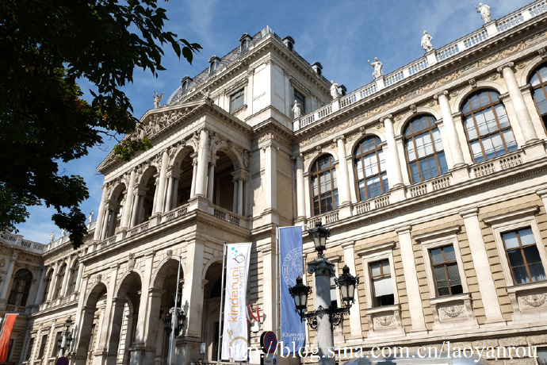
Day6 维也纳—维也纳大学—霍夫堡—市政厅
一早起来用公寓厨房做了顿此行以来最正式的住家早餐，期待满满地打开大门踏进了维也纳清晨阳光中。朝着维也纳大学方向没走几步抬眼就望见了湛蓝天空中两座新哥特式尖塔直插入云的沃蒂夫教堂，据说该教堂是奥地利皇帝弗朗茨.约瑟夫（即茜茜公主的老公）的弟弟马克西米连为了感谢天主护佑他哥哥在此地遇刺又奇迹康复而兴建的，其左右比肩的哥特双塔及狼牙棒的飞扶壁的外形和风格就如同精简版的米兰大教堂一样。联想起捷克库特纳霍拉小镇的圣芭芭拉大教堂以及分散于欧洲各地的诸多同类教堂，不由得慨叹哥特式及新哥特式教堂建筑潮流在当时欧洲宗教建筑界是多么的风靡一时啊！
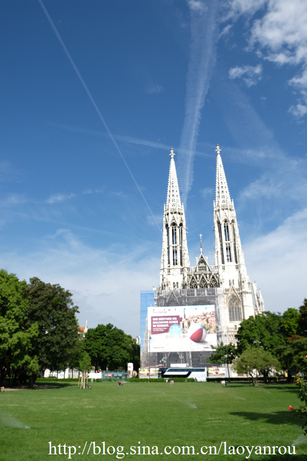
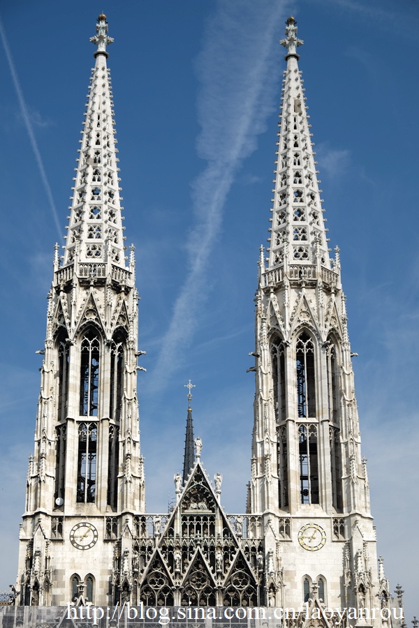
有句老话说得好兔子不吃窝边草，想着离公寓太近了随时可来参观，所以我们仅是环绕教堂一周便直奔维也纳大学去了（结果便是经过无数次但从未进去过）。主要是从维也纳大学走向世界的那些星光熠熠的科学界大牛们的诱惑力实在太强，惹得我们一心想带着AMY赶紧进去熏陶熏陶，痴心妄想地让她沾上点仙气（有我们这么恬不知耻的么？）。从外表上看维也纳大学仿若隐藏在闹市中的一幢普通的市政大厅，我们直至走到它跟前也没反应过来这就是其本尊，还在傻傻地找所谓的校门和围墙。这座由哈布斯堡王朝鲁道夫四世皇帝于公元十四世纪兴建的全奥地利历史最悠久、规模最大的德语大学其实最初是为了与当时卢森堡家族在波西米亚修建的布拉格大学PK而生的，可见当时盘踞欧洲各地的名门望族们不仅在金钱财富和土地上拼个你死我活，还有像意大利佛罗伦萨美帝奇家族那样在艺术造诣及贡献方面争个高低，甚至连文化教育方面兴建大学、捐资助教都可以拿来作为炫耀的资本。有钱人斗法，可普通老百姓们却是乐享其成了,有史以来从占地26万多平米的维也纳大学8个学院190多个专业和8万多学生里共培养出了27位诺贝尔奖获得者!其著名校友还包括赫赫有名精神学家弗洛伊德、物理学家薛定谔、天文学家多普勒等。可就是这样一所欧洲最古老的顶尖学府我们一行三人竟未遇到任何门卫的阻拦便推开貌似市政大厅的前门堂而皇之地登堂入室了！诚惶诚恐的我们四周小心打量着校园的环境，只见整个大学其实是一前一后两排主教学楼及东西两侧的连廊围成的回字形建筑群，中间是一大块绿色的中庭广场，星星点点摆了不少印着维也纳大学字样的蓝色帆布沙滩椅，广场一隅还设有一家露天咖啡座，三两学生沐浴着清晨的阳光一边品咖啡一边专注地翻看着厚厚的书本，而广场正中间竖立着一尊巨大的卡斯泰利娅（山林水泽女神）雕像喷泉，一条巨蟒温顺地伏在她的脚下。在恬静安逸的中庭广场两侧的连廊里，沿着墙壁一路摆放着维也纳大学知名校友及教授学者们的铜像共一百多座，我们好奇地一路寻去，竟也找到了发现著名“多普勒效应”的多普勒教授及量子力学奠基者之一、提出了“薛定谔的猫”量子力学思维实验的诺奖获得者—埃尔温·薛定谔的纪念铜像，想来维也纳大学的师生们正是以此方式向这些为维也纳大学做出不朽贡献的教授学者表示致敬的吧。这些铜像顺着粉红色墙壁和立柱依次向前延伸，在长廊地面高雅大气的大理石地面及顶部文艺复兴雕饰的天花拱顶映衬下显得尤其肃穆悠远，与其说维也纳大学是一座学校，还不如说其是一座集建筑、雕塑和绘画艺术为一体的艺术博物馆。穿梭于不同学院的文艺复兴风格的古典教学楼之间，陶醉在治学严谨的学术氛围和优雅教学环境之中，令人既感觉典雅肃穆，心中又不由得燃起了浓烈的求知向学的欲望，希望AMY也能如我们所愿，能感知到知识的些许魅力吧！
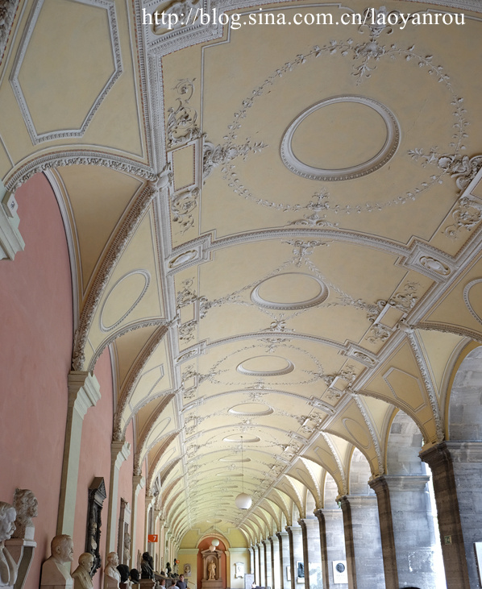
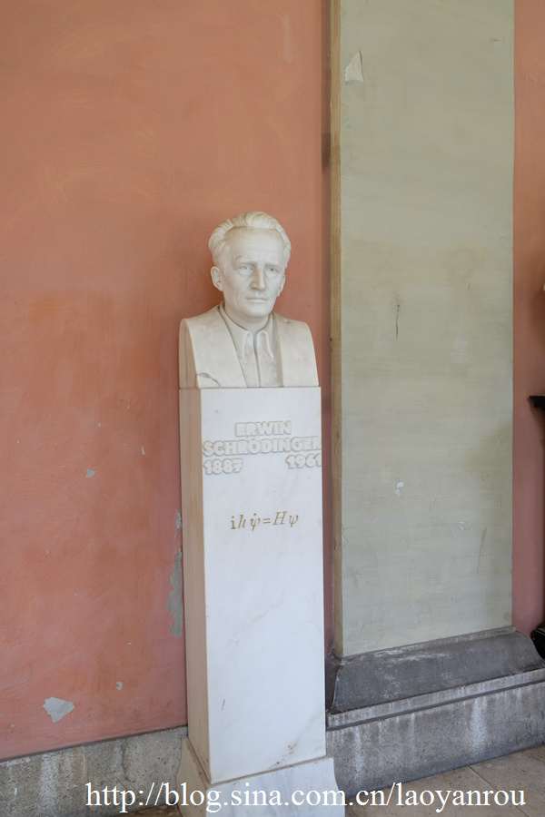
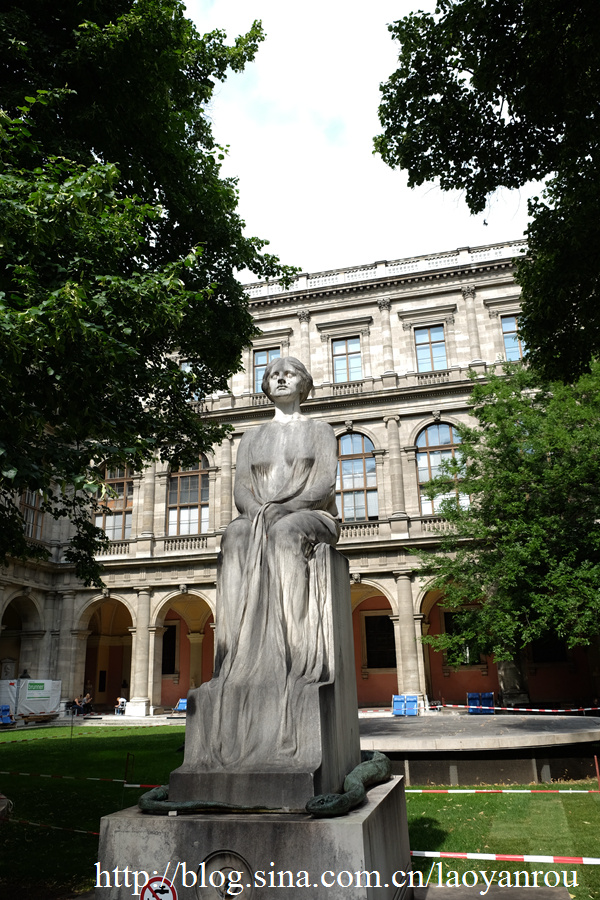
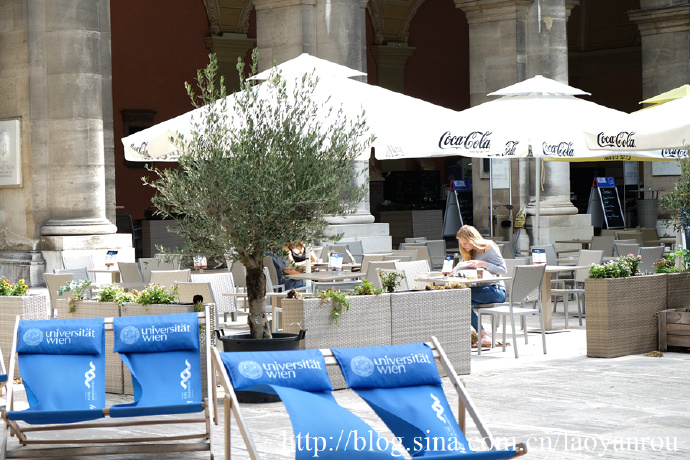
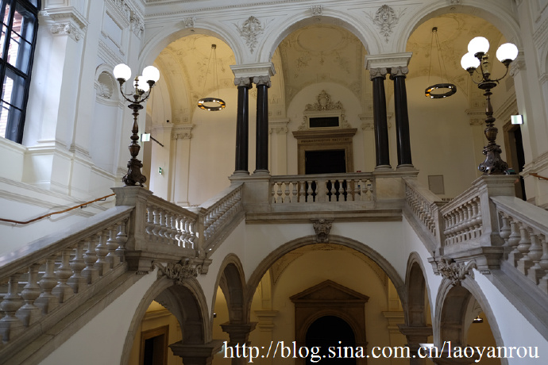
不曾想AMY从来没见过那么宏大威严的高等学府场面，老是嘟嘟囔囔地担心被人当成非法闯入者驱逐出去，所以大家也就只能囫囵吞枣地粗略转了转便从侧门离开前往下一站—霍夫堡皇宫。这座素有维也纳“城中之城”称号的皇宫占地24万平，拥有18栋楼房、19个庭院共计2900多间房间，如此规模形制无比庞大的宫殿群其实是历经了各代神圣罗马帝国皇帝及奥匈帝国皇帝的添砖加瓦才逐渐形成的，可以说自从发源于瑞士的哈布斯堡王朝的德意志国王鲁道夫一世从奥地利最早统治者巴本堡家族手中夺得奥地利统治权，将其从巴伐利亚公爵一个边区伯爵级领地逐渐提升为公爵级领地的同时，霍夫堡的兴建就已经开始了。正是因为经过了近600多年的连续不断的改造扩建，使得皇宫的建筑糅合集中了哥特式、新古典、文艺复兴、巴洛克式、洛可可式等各代精华的艺术表现风格，故称其为欧洲近现代建筑艺术史的发展长廊也不为过。霍夫堡皇宫现如今已形成了新、旧皇宫两个主要部分，其中新皇宫是弗兰茨一世（茜茜公主的老公）于十九世纪末重建的，由于收藏的只是一些乐器和武器不入我们法眼，故直接将其忽略买了参观套票，进入了老皇宫的宴会和银器馆一探究竟。果不其然，这里展示陈列的全是当时欧洲最穷奢极欲的皇宫贵族们用膳所涉及的所有餐具和器具，琳琅满目、五光十色，且材质包括金、银、水晶、陶瓷等五花八门，你所能想到的、想不到的用来吃饭或宴请摆设的家伙在这里都被做得无比精致华贵、眼花缭乱，别的不说但从宏大壮观方面来看，仅一条餐桌上用来摆放食物的数十米长的纯金搁台就令人咋舌不已，更不用说从细节上看，连最朴实无华的白色餐巾都被密不外宣的手法折叠得如同艺术品一般。目瞪口呆地看完后，只能用四个字形容“大开眼界”，从没见过这么琼浆玉液、金鼎玉杯的宴饮排场，深深地拉起了我们了对欧洲封建王朝的皇亲国戚们日常生活奢靡腐败、穷奢极欲的刻骨仇恨！
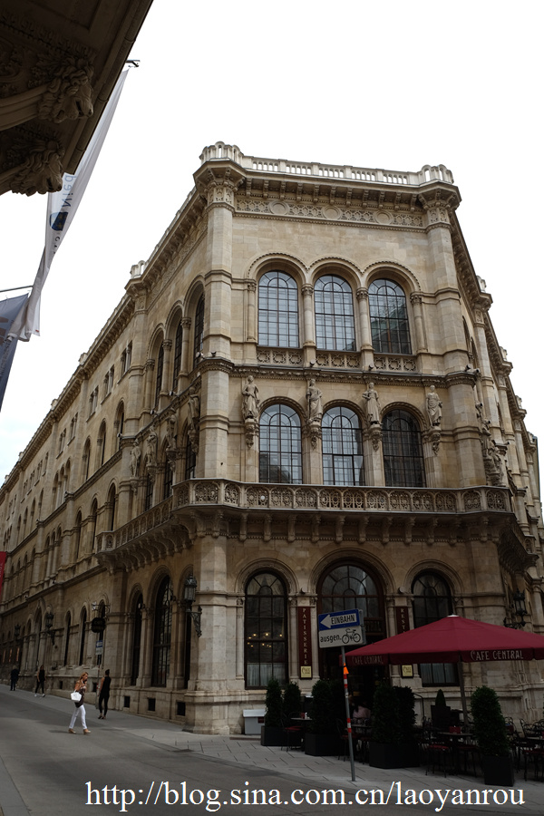
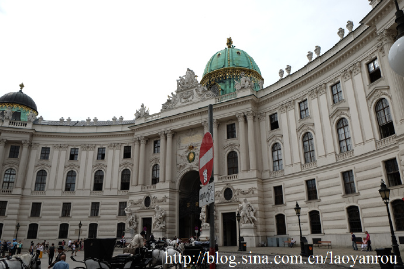
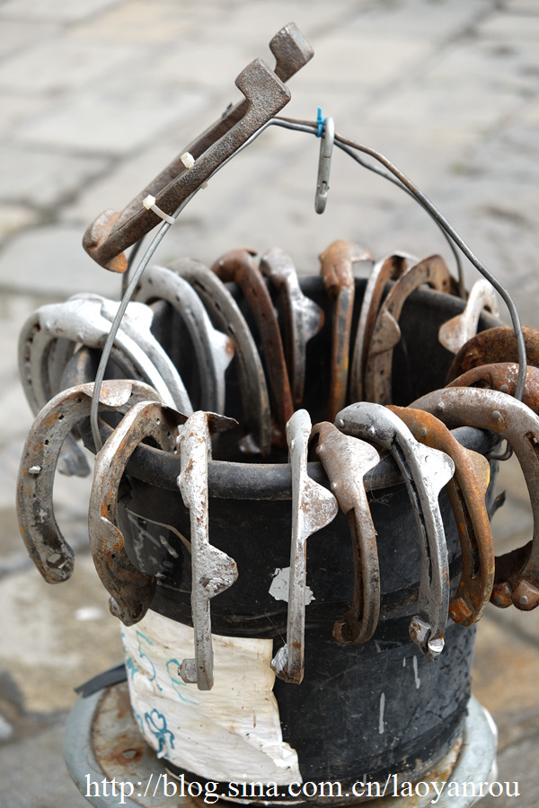
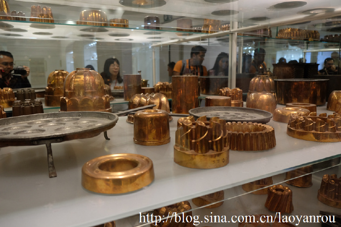
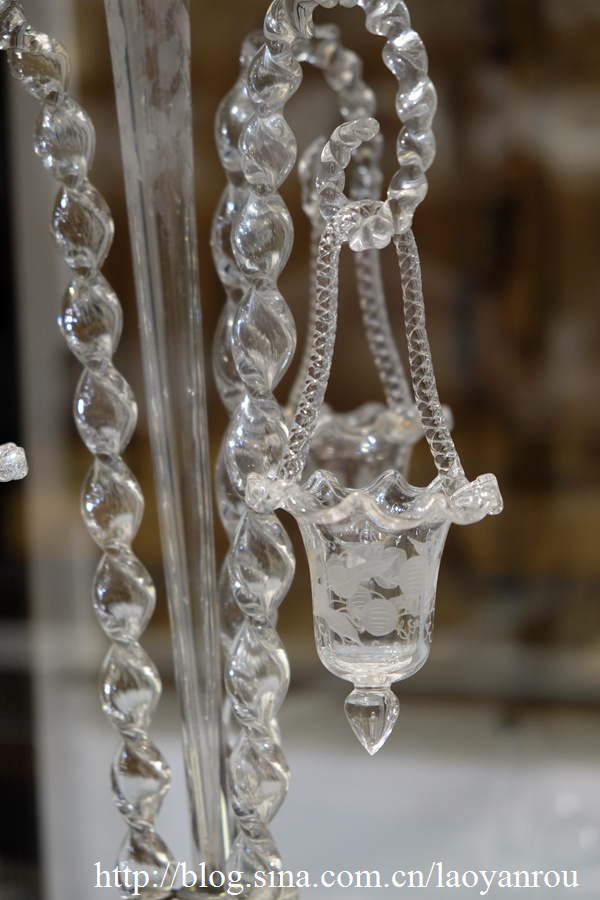
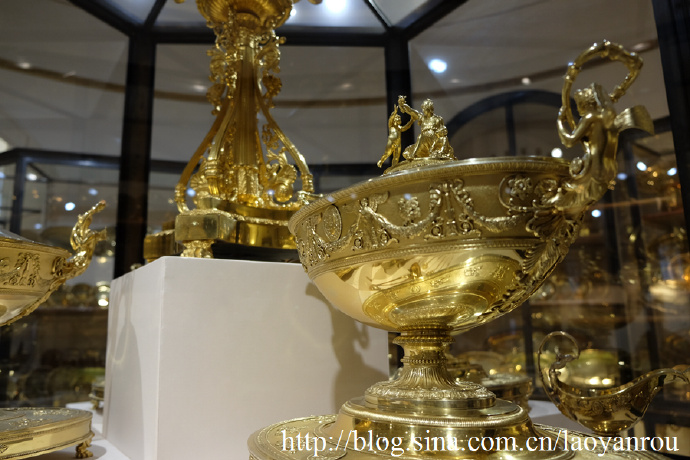
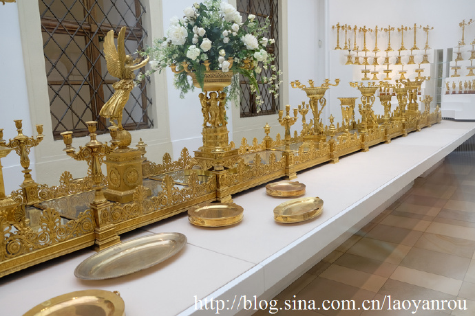
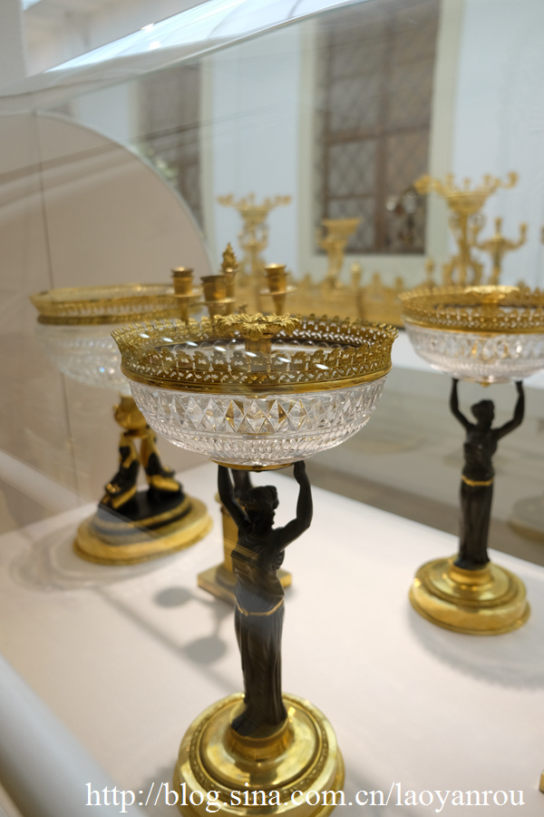
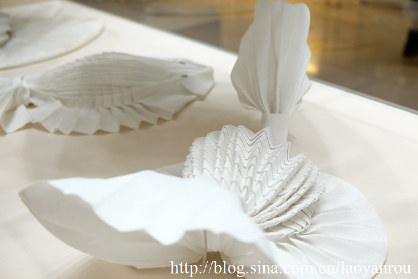
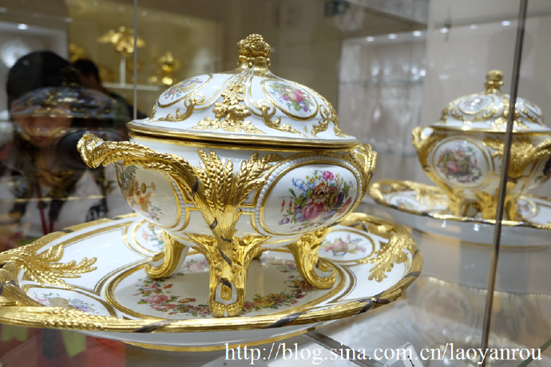
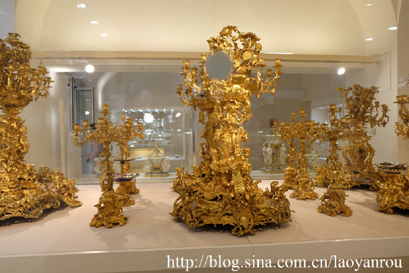
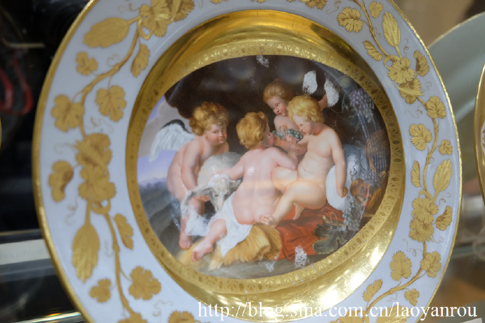
当然话也不能说绝，一棍子打死一船人，至少茜茜公主的老公弗兰茨一世的日常起居生活还是很注重勤俭节约的，我们在参观霍夫堡皇宫最值得一看的皇帝居室时赫然发现，这个在位长达68年、建立了奥匈帝国以阻止拿破仑称帝梦想的悲催皇帝（弟弟被墨西哥革命党枪决、妻子在日内瓦被民族主义者无辜刺死、大女儿病死、儿子殉情自杀、继承人在萨拉热窝被黑手党干掉）竟然过着如此简朴的生活。尽管宫殿房间本身的豪华装修无法改变，但弗兰茨所睡的是一张最普通简陋不过的行军铁床，旁边的盥洗用具也是和一般老百姓用的一样毫不起眼，不单如此，他还异常勤奋，每天5点起床工作12小时以上，洗冷水澡，能熟练运用他的子民的八种语言，不管从哪个角度来看都是一位勤政爱民、生活自律的好皇帝。但造物弄人，到他手上偏偏就摊上了一个濒临覆灭的封建王朝帝国，他曾经拥有的深为子民们同情的勤勉和奉公、王子公主的美丽爱情童话也无法力挽狂澜避免其犯下的一个个军事和外交的失误，最终只能眼睁睁地看着庞大的帝国从原先野心勃勃的神圣罗马帝国之普世君主国（势力范围曾远达西班牙、南美、荷兰及环地中海沿岸广大区域），萎缩到仅包括奥地利、波西米亚和匈牙利在内的奥匈二元帝国，最终连波西米亚和匈牙利都没保住，回归到最终哈布斯堡王朝起家的奥地利帝国原点。
但故事到了他的妻子茜茜公主这里却又是另一番景象了，所谓的国家荣辱兴衰、勤俭自律似乎和这位出身于巴伐利亚公爵家庭、从小自由烂漫无拘无束的小公主没啥关系，她的居所风格与老公弗兰茨完全是大相径庭，不仅装饰摆设了不少高档名贵家具和大师画作，而且非常注重形体外貌的她还专门在化妆室专设了健身器具如吊环之类的以备经常锻炼用。在专门为她开设的茜茜公主博物馆里，我们还看见了不少璀璨耀眼的珠宝首饰、华丽高贵的服饰、种类繁多的美颜、化妆及塑体用品，完美诠释了什么叫“你负责挣钱养家，我负责貌美如花”。博物馆入口的一面墙甚至一字排开了她年轻时几乎每一年的靓丽肖像照，可见其作为巴伐利亚公爵的女儿及欧洲古老庞大的奥匈帝国皇后对于自己美貌的自信和关注。我们的AMY倒是对这位公主的传奇一生看得滋滋有味，仔细认真地督促我将她的生平故事一一翻译给她，从她怎么从一位生活在阿尔卑斯山区的活泼烂漫、生性自由的巴伐利亚公主阴差阳错地被表兄弗兰茨一见钟情地娶为神圣罗马帝国的皇后，又怎么因为不适应古板拘谨的王室生活与婆婆苏菲经常闹别扭而被迫与自己的三个子女分开，云游欧洲各地，又常常与丈夫弗兰茨因个性不合、缺乏沟通而郁郁寡欢（尽管如此，她离世后弗兰茨依然称她为自己世界上最爱的女人），不仅经历了感情失败的政治婚姻而且也饱受大女儿病死、儿子自杀对其精神的摧残折磨，最后在一次瑞士日内瓦出游时遭到一名意大利无政府主义者的刺杀而香消玉殒。对这段传奇故事AMW听得津津有味，甚至回国后还特意找到了《茜茜公主》的电影继续回味这个幽婉回肠的王子公主爱情故事，可电影毕竟是对历史进行了艺术化的加工和渲染，真实的伊丽莎白（即茜茜公主）其实除了匈牙利人以外并不太受其他帝国子民的爱戴，大多人都认为她抛夫弃子不负责任、任性散漫不守规矩，实在算不上是一位温文尔雅、母仪天下的合格皇后。可不得不承认的是，历史却往往以它最想让人待见的一面出现在世人面前，是非功过、孰是孰非千人千词，像武则天干脆给自己竖了一个无字碑留待后人评说，就让我们对伊丽莎白的印象完美地保留在电影中的那个美丽浪漫、活力四射的茜茜公主身上吧！
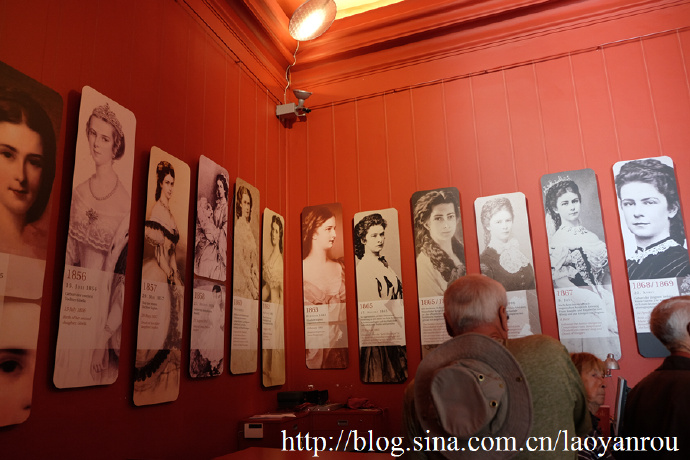
意兴阑珊地从霍夫堡出来已近下午时分，米歇尔广场上招揽游客的马车依旧踩着“啪嗒啪嗒”的马蹄声擦身而过，戴着黑色小礼帽、身穿白色衬衫外套黑色小马甲的车夫精神抖擞地熟练驾着黑白相间的古典四轮马车，若是忽视了车内乘客的现代装束还真让人感觉仿佛时光倒退回了那个辉煌时代。
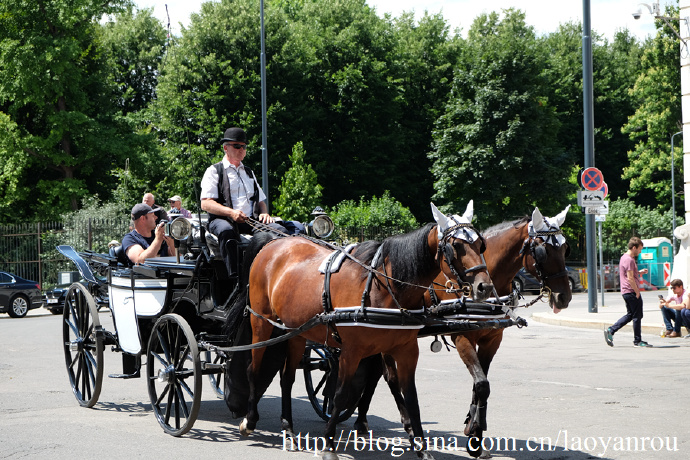
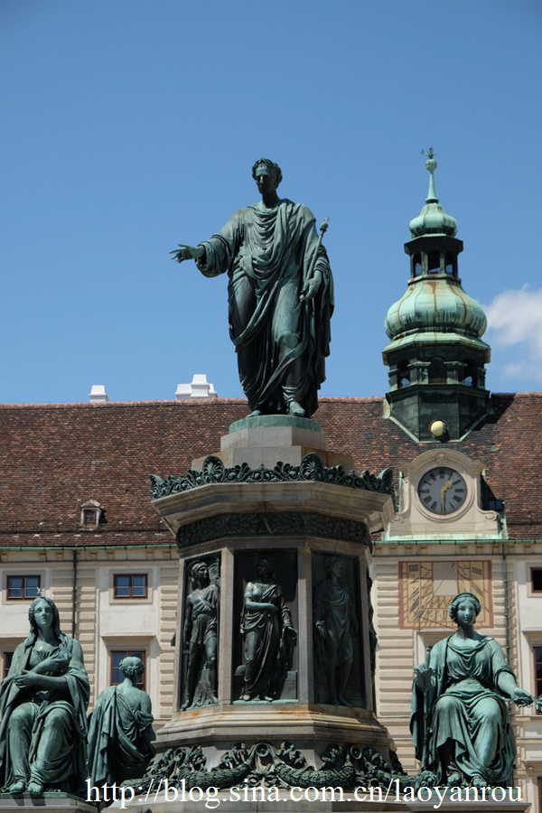
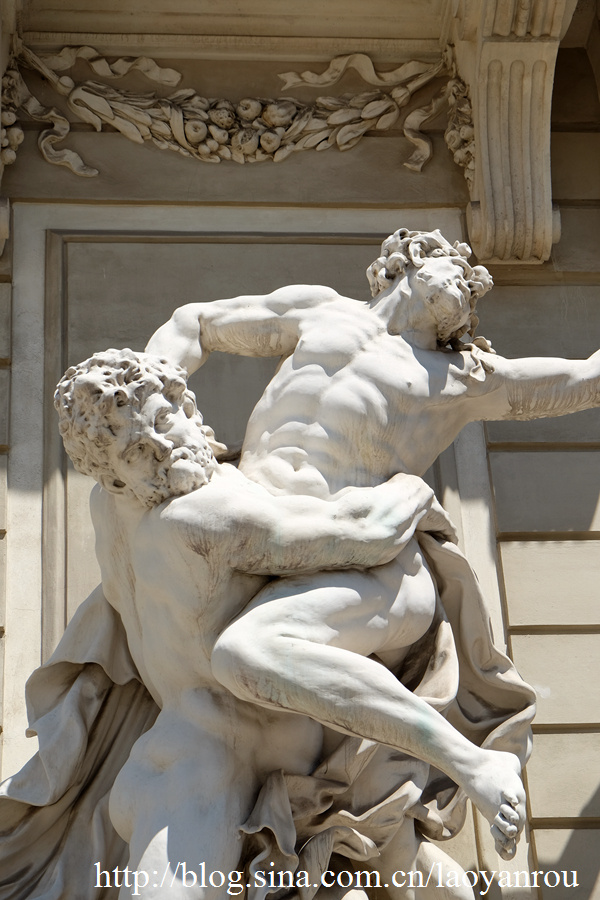
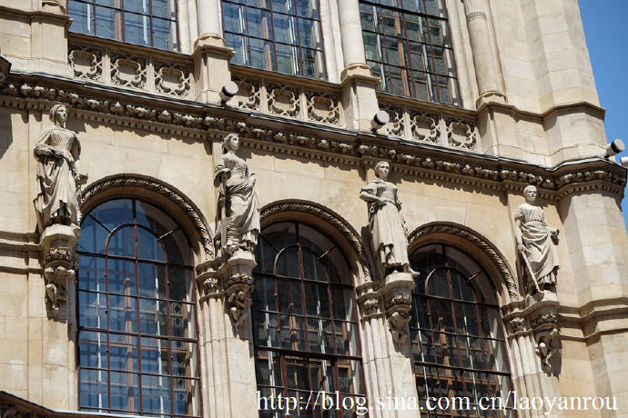
维也纳市政厅也是一个奇葩的存在，若不是高耸的哥特式钟塔和三层多高宏伟的古典建筑大楼证明它的存在，还真看不出来这个广场上熙熙攘攘宛若大集市一样，人们悠哉地喝着咖啡、吃着烧烤、就着啤酒大快朵颐的地方竟然就是维也纳的政府行政中心！反正我是无法想象在若在白宫大草坪前面聚众喝酒、摆摊烧烤会落下什么结局。尽管后来看到广场四周竖立的广告牌和旗帜标语显示这里正在举行2017年维也纳电影节，但我们还是慨叹与奥地利人并没有把政府行政机构看作多么神圣庄严不可侵犯的物件，最多只是拿了纳税人的钱为纳税人服务的公务员日常办公的地方而已，也难怪当时即使神圣罗马帝国的皇帝有时候也无法摆平奥地利的国民众议院的决议。
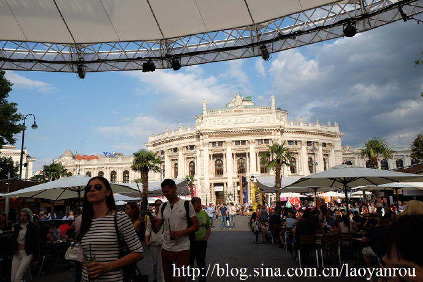
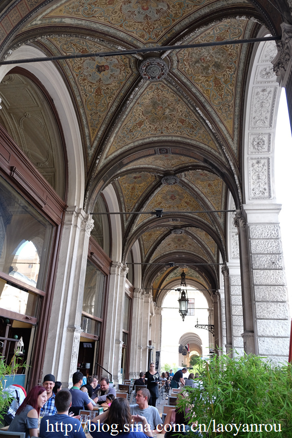
回公寓路上看见路边的一个公园里专门开辟了一块场地供宠物狗自由活动，外面围着大半人高的铁丝栅栏，地上铺满了干燥的树皮以便于清理狗屎，狗儿们在围栏里面脱离了绳子束缚尽情撒欢。这个点子确实非常人性化，既考虑了爱狗人士给予宠物自由活动空间的愿望，又保护了其他公众免受其骚扰及伤害的权利，可谓一举两得。相比来说，国内不少小区对宠物狗的管理要么就是放任自流，使得小区居民常因宠物狗四处游走而担惊受怕，要么是严格管理绝对禁止松开宠物保护绳而限制了其自由活动空间，从这点来看倒是可以好好借鉴借鉴维也纳人的宠物管理经验的！
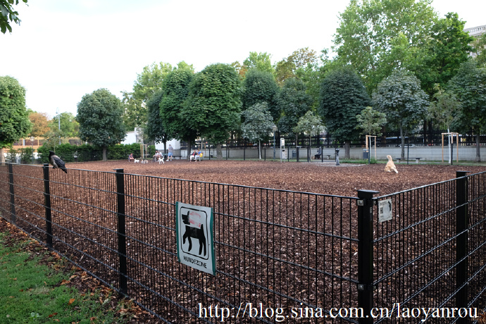
英雄广场上的游人如织，也有不少维也纳年轻人在捣鼓着花样滑板，特技单车，广场建筑四周被五颜六色的绚丽围板华丽丽地绕了一圈，仿佛一位年逾花甲的老妇人围上了一条最时尚的Hiphop项链，古典与现代，传统与时尚竟然在维也纳的霍夫堡皇宫前实现了毫无违和感的融合。 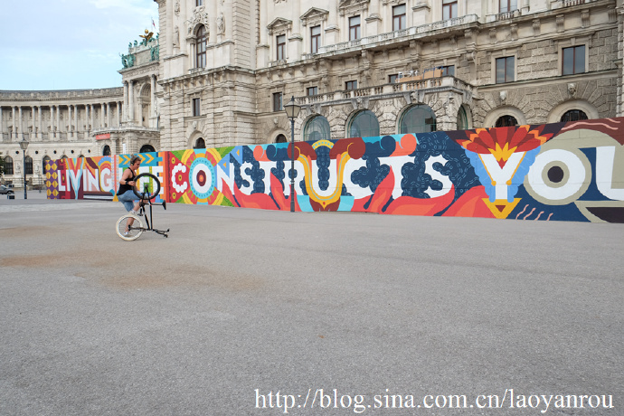 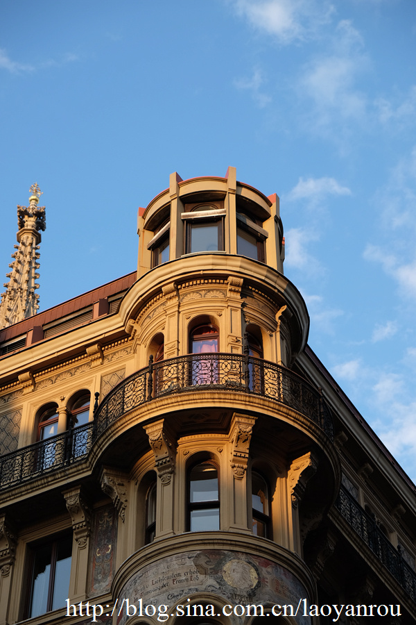 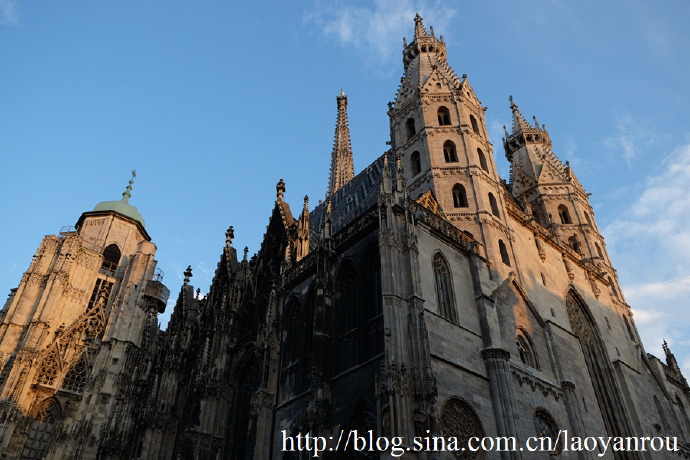 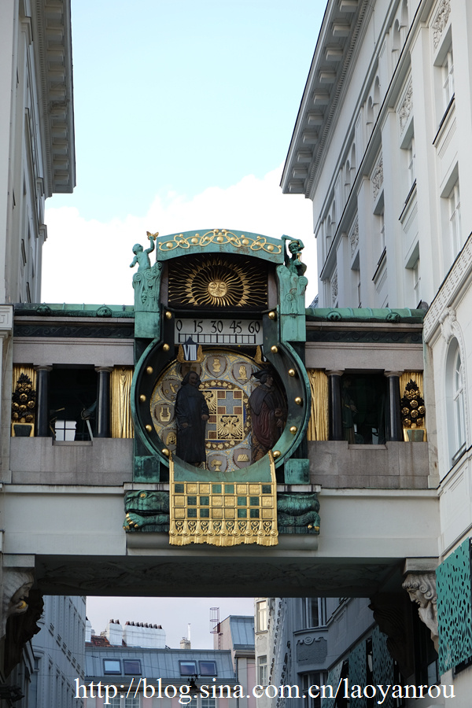 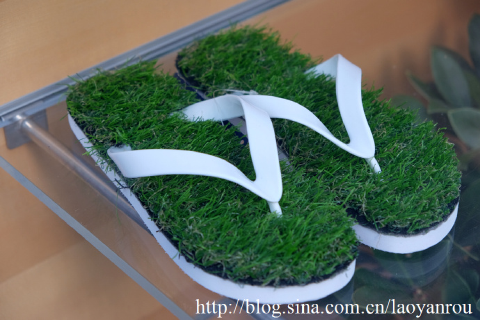